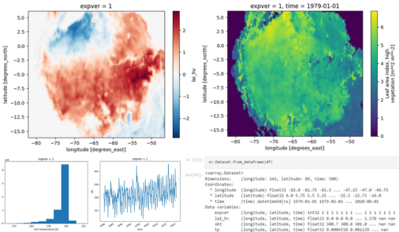
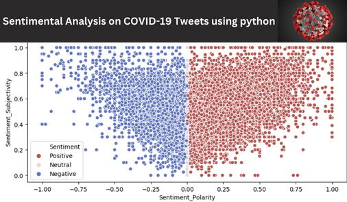

Projects
Projects
As a data scientist with a passion for extracting insights from complex datasets, I have successfully completed numerous projects spanning data science, machine learning, deep learning, and data analysis. I've had the opportunity to delve into diverse datasets, uncover valuable insights, and build predictive models that drive impactful decision-making.
Traffic Sign Classification Using Deep Learning
 Traffic sign classification is an important task for self-driving cars. In this project, the dataset contains 43 different classes of images. The project understands the theory and intuition behind Deep Learning and Convolutional Neural Networks (CNNs). Imports key Python libraries, and datasets, and performs image visualization. Performs image normalization and converts images from color-scaled to gray-scaled. Builds a Convolutional Neural Network using Keras with Tensorflow 2.0 as a back-end. Compiles and fits Deep Convolutional Neural Network model to training data. Assess the performance of the trained Convolutional Neural Network model and ensure its generalization using various KPIs.
Traffic sign classification is an important task for self-driving cars. In this project, the dataset contains 43 different classes of images. The project understands the theory and intuition behind Deep Learning and Convolutional Neural Networks (CNNs). Imports key Python libraries, and datasets, and performs image visualization. Performs image normalization and converts images from color-scaled to gray-scaled. Builds a Convolutional Neural Network using Keras with Tensorflow 2.0 as a back-end. Compiles and fits Deep Convolutional Neural Network model to training data. Assess the performance of the trained Convolutional Neural Network model and ensure its generalization using various KPIs.
Tracking Objects in Video with Particle Filters
We built a particle filter from scratch, and use it track a target in a video. The process involves loading and displaying video frames, initializing a particle filter, computing errors, calculating weights and resampling particles, applying noise, and optimizing the particle filter. This results in accurate tracking of objects within the video sequence, ensuring robust performance and improved tracking outcomes.

Project Structure
- Load video frames
- Display video frames
- Initialize particle filter
- Compute errors
- Calculate weights and resample particles
- Apply noise
- Optimize particle filter
Climate Geospatial Analysis on Python with Xarray
Project Structure
- Load and getting familiar with NetCDF datasets
- Select and filter data through coordinates
- Visualize multidimensional and geospatial variables
- Apply simple operations over multidimensional data
- Apply grouped operations over multidimensional data
- Merge and concatenate datasets
- Interact with Pandas and export datasets
References
- Copernicus website - there’s a lot of climate data!
- Xarray documentation
Sentimental Analysis on COVID-19 Tweets using python
Project Structure
- Introduction and Loading our Dataset
- Text preprocessing
- Data Cleaning
- Exploring our Date
- Sentimental Analysis
- Visualizing the Result